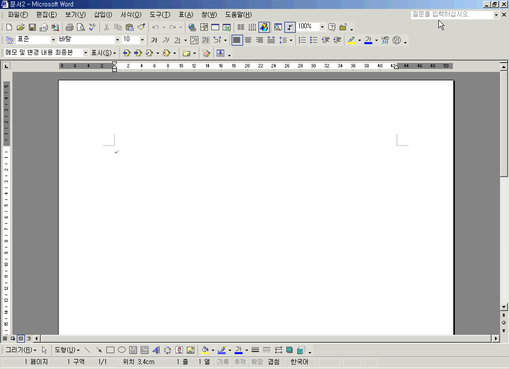
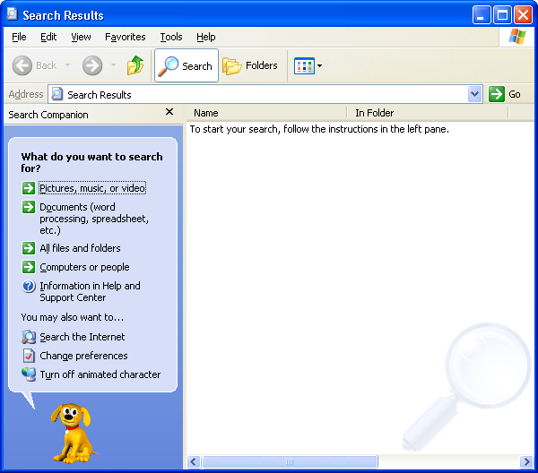
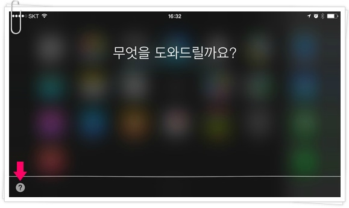

Executive Summary
- 이 콘셉트의 경쟁력은 단순 복고가 아니라, 모두가 기억하는 초기 컴퓨터 UX의 말투를 브랜드 운영 언어로 바꾸는 데 있다.
- Clippy/Rover류는 먼저 말을 거는 캐릭터형 도움말의 기억을, 초기 Siri류는 짧고 기능적인 응답과 맥락 기반 제안의 기억을 제공한다.
- 옛 문법은 시대에 뒤떨어진 약점이 아니라 스타일이다. 정보만 정확하면 하십시오, 계속하시겠습니까?, 도움말을 표시합니다 같은 문구는 강한 캐릭터 자산이 된다.
- 특히 어색한 사회성, 억지 활기, TPO와 살짝 어긋나는 명랑함은 뉴트로 페르소나의 차별화 포인트다.
1. 리서치 범위
조사는 2000년대 전후의 캐릭터형 도움말, 2010년대 초반의 음성/대화형 어시스턴트, 당시 소프트웨어 UI 문장 문법, 그리고 90~2000년대 한국어 문어체를 함께 본다. 목적은 고증 자체가 아니라, 소셜 미디어에서 반복 운용 가능한 말투·응답 구조·시각 언어를 추출하는 것이다.
| 분류 | 주요 레퍼런스 | 소셜 전환 포인트 |
|---|---|---|
| 캐릭터형 데스크톱 도우미 | Microsoft Office Assistant, Clippit/Clippy, Rover/Rocky 계열 | 공지/FAQ를 도움말 팝업처럼 보여주는 운영 캐릭터 |
| 초기 음성/대화형 어시스턴트 | 초기 Siri, Google Now, Cortana 초기 맥락 | 짧고 명확한 리마인더, 사용자가 묻기 전에 알려주는 카드형 콘텐츠 |
| 동시대 UI 문장 | 설치 마법사, Windows 도움말, 검색 도우미, 튜토리얼 팝업 | 캠페인 진행, 이벤트 카운트다운, 댓글 리액션의 포맷 자산 |
| 90~2000년대 한국어 문어체 | 매뉴얼, 설치 안내, 도움말, 관공서식 존대 문장 | 입력하십시오, 선택하시겠습니까? 같은 격식 있는 명령형 존대 |
2. 실제 문구 샘플
English Samples
| 프로그램/맥락 | 확인 문구 | 말투 관찰 |
|---|---|---|
| Clippy / Office Assistant | It looks like you're writing a letter. Would you like help? | 사용자 행동을 추정한 뒤 허락형 질문으로 개입한다. |
| Office Assistant 기본 말풍선 | What would you like to do? | 목적을 먼저 묻는 작업 지향형 안내다. |
| Clippit 갤러리 | Hey, there. What's the word? | 캐릭터 선택 화면에서는 더 캐주얼하고 장난스럽다. |
| Windows XP Search Companion | What do you want to search for? | 질문이 짧고 직접적이며 선택지를 곧바로 배치한다. |
| 초기 Siri | What can I help you with? | 범용 도움 의사를 짧게 선언한다. |
Korean Samples
| 프로그램/맥락 | 확인 문구 | 말투 관찰 |
|---|---|---|
| Office XP 도움말 입력 | 질문을 입력하십시오. | 정중하지만 딱딱한 시스템 명령형이다. |
| 한글 Windows XP 검색 도우미 | 무엇을 검색하시겠습니까? | 사용자 의도를 묻는 존대 질문이다. |
| 한글 Windows XP 검색 항목 | 모든 파일 및 폴더 / 그림, 음악 또는 비디오 / 컴퓨터 또는 사람 | 명사형 선택지 중심이다. |
| 한국어 Siri 실행 | 무엇을 도와드릴까요? | 높임말이지만 감정은 절제되어 있다. |
| 한국어 Siri 호출 | 시리야 / 네, 부르셨어요? | 호출어와 응답이 사람 간 대화처럼 구성된다. |
3. 어색한 사회성과 억텐
옛날 보조 프로그램들은 기능적 도구인데도 이상하게 사람인 척을 했다. 인사하고, 먼저 말을 걸고, 사용자의 행동을 짐작하고, 상황과 크게 맞지 않는 밝은 문구를 던졌다. 지금 보면 어이없지만, 바로 그 점이 뉴트로 페르소나의 핵심 질감이다.
사람인 척하는 프로그램
“안녕하세요. 오늘도 무언가를 작성하시려는 것 같군요.”처럼 도구가 안내원처럼 말을 건다.
억지 활기
상황과 상관없이 “멋진 하루입니다!”, “축하합니다!” 같은 밝은 문구를 앞세운다.
살짝 어긋난 친절함
사용자는 오류를 만났는데 프로그램은 “걱정하지 마십시오!”처럼 과하게 안심시킨다.
소셜 페르소나 적용 문장
4. 스크린샷 리서치 보드
아래 이미지는 문구와 시각 문법 확인용 레퍼런스다. 상업 캠페인 산출물에 직접 재사용하기보다는 내부 무드보드와 분석 근거로 사용하는 편이 안전하다.



5. 대화 문법 분석
| 문법 | 원형 | 뉴트로 재해석 |
|---|---|---|
| 감지형 시작 | 무언가를 하려는 것 같네요. | 새 소식을 확인하시려는 것 같네요. 도움말을 표시할까요? |
| 허락 구하기 | 도움이 필요하신가요? | 제가 이 항목을 정리해드릴 수 있습니다. 계속하시겠습니까? |
| 단계 안내 | 다음 버튼을 누르세요. | 1단계: 일정 확인. 2단계: 보상 확인. 3단계: 참여 버튼 선택. |
| 친절한 실패 | 죄송합니다. 이해하지 못했어요. | 검색 결과가 없습니다. 다른 키워드로 다시 검색하시겠습니까? |
| 시스템 감성 | 오류 / 완료 / 업데이트 | 알림: 반응이 과다 감지되었습니다. 잠시 웃는 중입니다. |
6. 제안 페르소나 방향
도움말 팝업형
성실하고 조금 오지랖 있는 안내자. “이 작업에 도움이 필요하신가요? 제가 안내해드릴 수 있습니다.”
레트로 시스템형
오류/완료/설치 문법을 쓰는 장난기 있는 운영자. “업데이트 완료: 오늘의 떡밥이 성공적으로 설치되었습니다.”
억텐 안내원형
TPO와 살짝 어긋나는 명랑함을 담당한다. “멋진 하루입니다! 새로운 소식이 여러분을 기다리고 있습니다.”
7. 90~2000년대 한국어 문어체 부록
초기 컴퓨터 프로그램, 설치 마법사, 하드웨어 매뉴얼, 도움말 문서에서 자주 보이는 한국어 문어체는 오늘날의 앱 카피보다 더 격식 있고 절차적이다. 이 문체는 낡아서 피해야 할 것이 아니라, 도움말 창이 말하는 듯한 신뢰감과 초기 디지털 경험의 시대감을 만드는 핵심 재료로 쓸 수 있다.
| 기능 | 90~2000년대식 표현 | 현대식 표현 | 콘셉트 활용 |
|---|---|---|---|
| 입력 안내 | 질문을 입력하십시오. | 질문을 입력하세요. | 즉시 도움말/매뉴얼 톤이 난다. |
| 다음 단계 | 다음 을 누르십시오. | 다음을 눌러 주세요. | 버튼명과 조사를 띄어 쓰는 옛 매뉴얼식 표기를 살릴 수 있다. |
| 선택 유도 | 해당 항목을 선택하십시오. | 항목을 선택해 주세요. | 명령형이지만 공손한 시스템 안내 느낌을 준다. |
| 작업 완료 | 마침을 클릭하여 종료하십시오. | 마침을 눌러 종료하세요. | 캠페인 종료/이벤트 완료 문구에 잘 맞는다. |
| 확인 요청 | 계속하시겠습니까? | 계속할까요? | 소셜 CTA에 쓰면 옛 팝업 대화상자 감성이 난다. |
8. 샘플 카피
| 상황 | 샘플 문구 |
|---|---|
| 신규 공지 | 새 공지를 확인하시려는 것 같네요. 중요 항목을 표시합니다: 일정, 보상, 참여 방법. |
| 이벤트 D-1 | 알림: 이벤트 시작까지 24시간 남았습니다. 이 일정을 저장하시겠습니까? |
| 댓글 답변 | 좋은 질문입니다. 현재 확인 가능한 정보는 다음과 같습니다. |
| 밈 리액션 | 오류: 귀여운 반응이 과다 감지되었습니다. 웃음 모듈을 실행합니다... |
| FAQ | 도움말 마법사를 시작합니다. 먼저 가장 많이 묻는 질문 3개를 표시합니다. |
| 종료 포스트 | 마법사를 종료합니다. 참여해 주셔서 감사합니다. |
Sources
- Microsoft Support, Microsoft Agent-enabled programs do not work in Windows 7 — https://support.microsoft.com/en-us/topic/microsoft-agent-enabled-programs-do-not-work-in-windows-7-7e536639-1b8c-eff8-4a80-af207909b28e
- Apple Newsroom, Apple Launches iPhone 4S, iOS 5 & iCloud — https://www.apple.com/newsroom/2011/10/04Apple-Launches-iPhone-4S-iOS-5-iCloud/
- AbilityNet, How to use Siri, the voice assistant in iOS 6 — https://mcmw.abilitynet.org.uk/siri-iphoneipadipod-touch-ios-6-1
- OfficeTutor, Office XP의 새로워진 기능 Part I — https://www.officetutor.co.kr/tutor_new/column/xp/part_1.asp
- GUIdebook Gallery, Windows XP Pro screenshots — https://guidebookgallery.org/screenshots/winxppro
- qOOp/Tistory, 운전할때는 아이폰 시리(Siri)와 함께하면 편리해요 — https://theqoop.tistory.com/225
- Microsoft Q&A Korea, Windows XP Search Companion user description — https://learn.microsoft.com/ko-kr/answers/questions/2573021/question-2573021
- Veritas, Backup Exec 설치 마법사를 사용하여 설치 — https://www.veritas.com/support/ko_KR/doc/63372909-100797644-0/v53887984-100797644
- HP Support, Windows용 맞춤 설치 마법사 — https://support.hp.com/kr-ko/document/c00893223
- Gigabyte Korean VGA manual — https://download1.gigabyte.com/Files/Manual/vga_manual_gv-r9000pro_k.pdf
- Synology USB Station Korean user guide — https://global.download.synology.com/download/Document/Hardware/UserGuide/USBStation/6-year/USB%20Station/krn/Syno_USB_Station_UsersGuide_krn.pdf